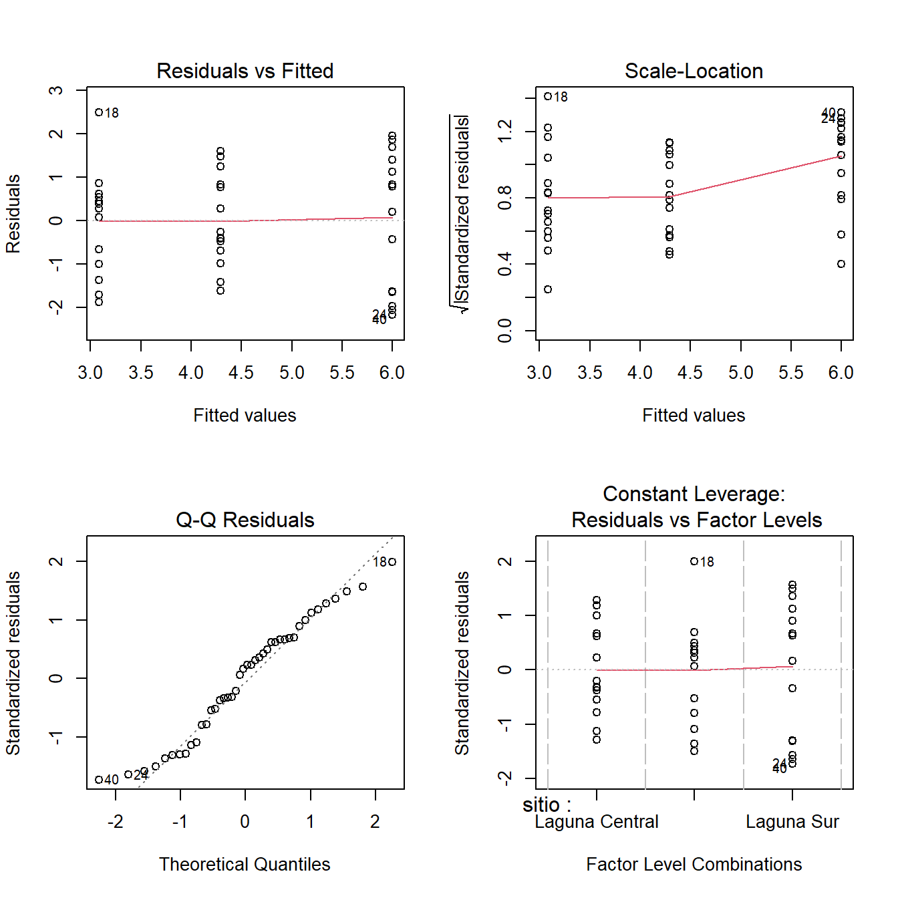
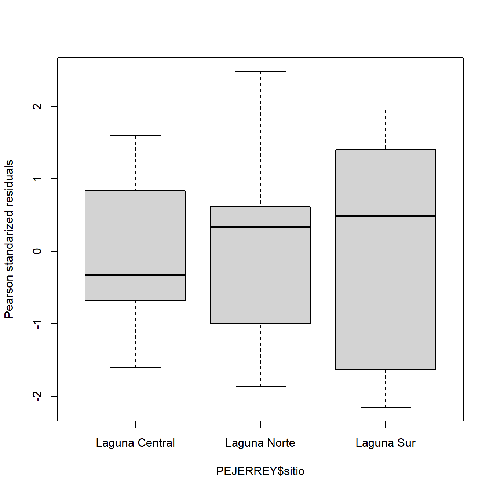
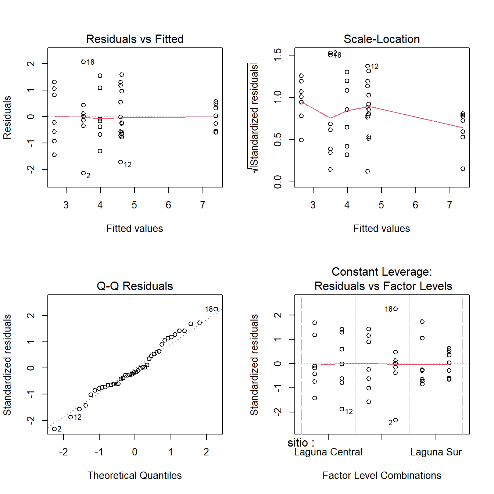
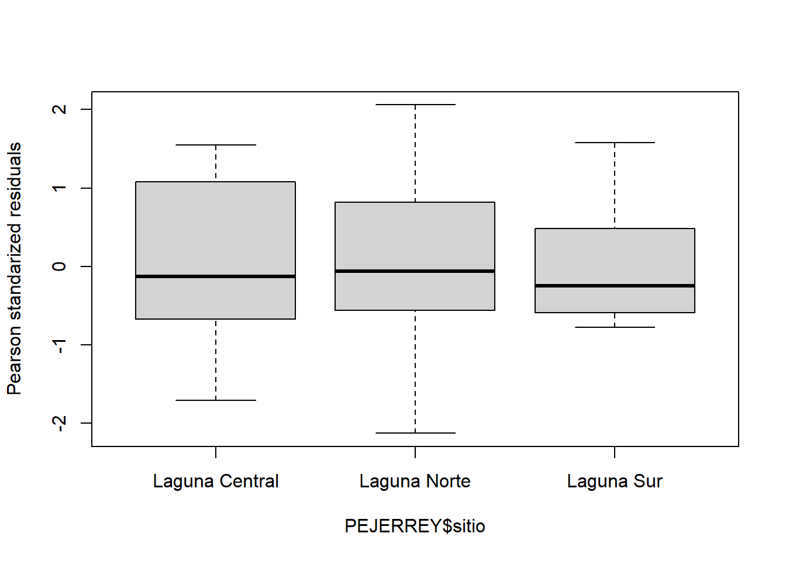
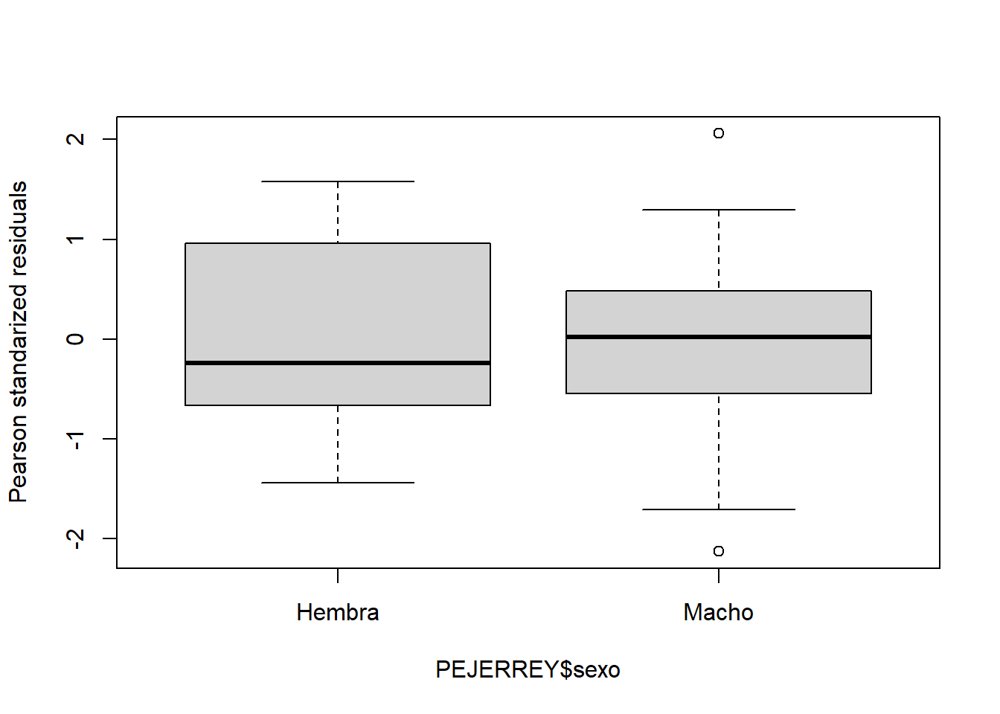
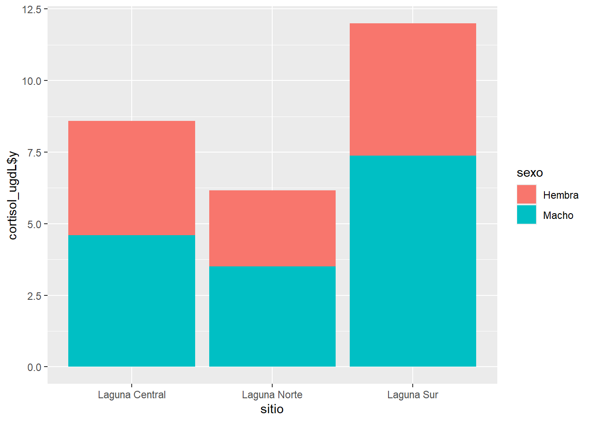
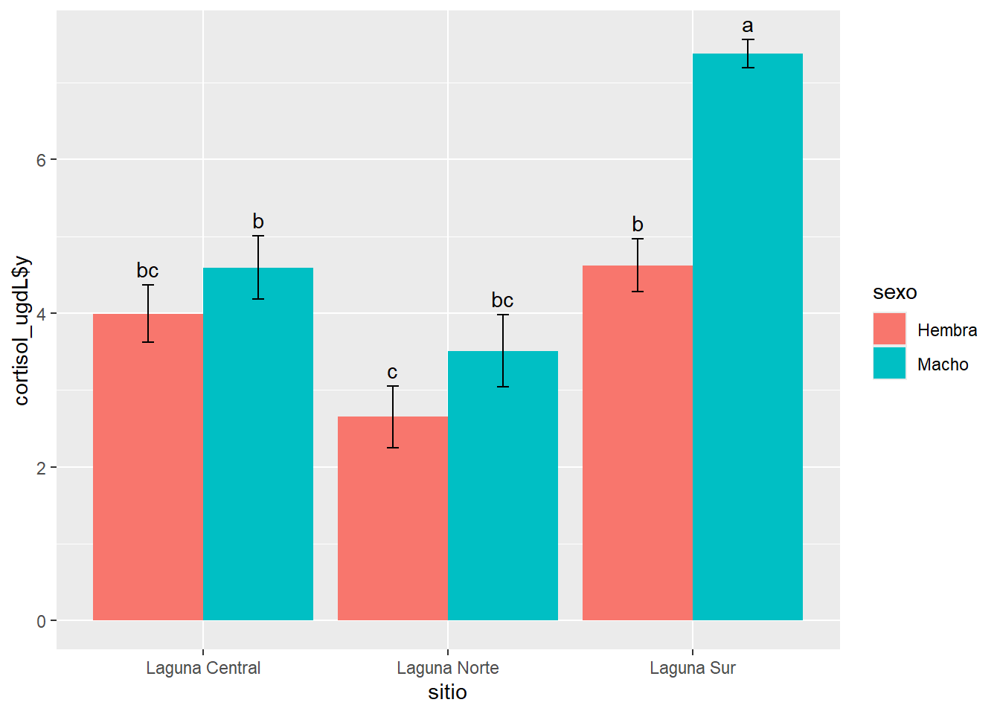

1 Unidad 3. Análisis y representación de datos categóricos
1.1 ANOVA a 1 factor
Ahora vamos a trabajar con los datos con variables categóricas. Cuando incorporamos un factor con diferentes niveles y nos interesa comparar si hay diferencias entre los efectos de los distintos niveles de uno o más factores uno de los análisis más utilizados es el análisis de la varianza. Comenzaremos con el caso de un único factor.
Este análisis plantea la comparación de medias muestrales a partir de la varianza que presentan los datos dentro de cada grupo (de allí su nombre). Al igual que el modelo de regresión, presenta supuestos a cumplirse (normalidad de la variable y homogeneidad de las varianzas).
El planteo del modelo en R será de la misma manera que la regresión, ya que se trata de otro modelo lineal. En nuestro ejemplo trabajaremos evaluando el efecto del sitio en la concentración de cortisol en sangre de ejemplares de pejerrey. Corremos el modelo y ponemos a prueba los supuestos de igual manera que hiciéramos anteriormente:
fit3 <-lm(cortisol_ugdL ~ sitio, data = PEJERREY)# Gráfico de Supuestoslayout(matrix(1:4, 2, 2)); plot(fit3) ; layout(1)

shapiro.test(resid(fit3))
Shapiro-Wilk normality test
data: resid(fit3)
W = 0.96136, p-value = 0.1652
bartlett.test(resid(fit3) ~ PEJERREY$sitio)
Bartlett test of homogeneity of variances
data: resid(fit3) by PEJERREY$sitio
Bartlett's K-squared = 2.3873, df = 2, p-value = 0.3031
boxplot(residuals(fit3, type ="pearson") ~ PEJERREY$sitio,ylab ="Pearson standarized residuals")

Como vemos hay normalidad de errores y homogeneidad de varianza, aunque pareciera que la Laguna Sur presenta una variabilidad mayor. Esto no es un problema muy grande, el modelo sobreestimará la varianza general y tendrá menos potencia, pero si igual encuentra diferencias podemos ignorarlo.
Entonces ahora que ya sabemos de la validez del modelo, pediremos la tabla del ANOVA para ver si existen o no diferencias significativas:
anova(fit3)
Analysis of Variance Table
Response: cortisol_ugdL
Df Sum Sq Mean Sq F value Pr(>F)
sitio 2 60.132 30.0658 17.858 3.121e-06 ***
Residuals 39 65.661 1.6836
---
Signif. codes: 0 '***' 0.001 '**' 0.01 '*' 0.05 '.' 0.1 ' ' 1
Vemos que arroja un p mucho menor a 0,05, por lo que diremos que al menos una media es diferente de las otras. Para saber cuál es diferente de cuál, como test a posteriori podemos correr el test de Tukey. Para ello utilizamos la función HSD.test del paquete agricolae:
cortisol_ugdL groups
Laguna Sur 5.998571 a
Laguna Central 4.294286 b
Laguna Norte 3.081429 c
Vemos que en la Laguna Sur los peces acumularon más cortisol que en la Laguna Central y más que en la Laguna Norte.
1.2 ANOVA bifactorial
Para correr un modelo de ANOVA con 2 factores diferentes y evaluar su interacción debemos poner ambas variables separadas por *. Analizaremos el mismo modelo de antes pero incorporando además el efecto del sexo de los animales:
fit4 <-lm(cortisol_ugdL ~ sitio * sexo, data = PEJERREY)
De la misma manera que antes, probamos los supuestos:
# Gráfico de supuestoslayout(matrix(1:4, 2, 2)); plot(fit4) ;layout(1)

# la homogeneidad se prueba para cada factorbartlett.test(resid(fit4) ~ PEJERREY$sitio)bartlett.test(resid(fit4) ~ PEJERREY$sexo)boxplot(residuals(fit4, type ="pearson") ~ PEJERREY$sitio,ylab ="Pearson standarized residuals")boxplot(residuals(fit4, type ="pearson") ~ PEJERREY$sexo,ylab ="Pearson standarized residuals")
Bartlett test of homogeneity of variances
data: resid(fit4) by PEJERREY$sitio
Bartlett's K-squared = 2.671, df = 2, p-value = 0.263
Bartlett test of homogeneity of variances
data: resid(fit4) by PEJERREY$sexo
Bartlett's K-squared = 9.2102e-06, df = 1, p-value = 0.9976


Una vez comprobados los supuestos, para ver los resultados debemos ejecutar el comando anova. También podemos ejecutar el summary, que nos permitirá ver contrastes con respecto al primer nivel del factor:
# Tablasanova(fit4)
Analysis of Variance Table
Response: cortisol_ugdL
Df Sum Sq Mean Sq F value Pr(>F)
sitio 2 60.132 30.0658 30.7285 1.640e-08 ***
sexo 1 20.720 20.7202 21.1769 5.038e-05 ***
sitio:sexo 2 9.718 4.8588 4.9659 0.01246 *
Residuals 36 35.224 0.9784
---
Signif. codes: 0 '***' 0.001 '**' 0.01 '*' 0.05 '.' 0.1 ' ' 1
summary(fit4)
Call:
lm(formula = cortisol_ugdL ~ sitio * sexo, data = PEJERREY)
Residuals:
Min 1Q Median 3Q Max
-2.1300 -0.5836 -0.1521 0.5636 2.0600
Coefficients:
Estimate Std. Error t value Pr(>|t|)
(Intercept) 3.9943 0.3739 10.684 1.03e-12 ***
sitioLaguna Norte -1.3414 0.5287 -2.537 0.01565 *
sitioLaguna Sur 0.6257 0.5287 1.183 0.24439
sexoMacho 0.6000 0.5287 1.135 0.26396
sitioLaguna Norte:sexoMacho 0.2571 0.7477 0.344 0.73292
sitioLaguna Sur:sexoMacho 2.1571 0.7477 2.885 0.00657 **
---
Signif. codes: 0 '***' 0.001 '**' 0.01 '*' 0.05 '.' 0.1 ' ' 1
Residual standard error: 0.9892 on 36 degrees of freedom
Multiple R-squared: 0.72, Adjusted R-squared: 0.6811
F-statistic: 18.51 on 5 and 36 DF, p-value: 4.481e-09
Vemos que el resultado del ANOVA es significativo para los dos factores y la interacción. Esto quiere decir que los machos y hembras no se comportan de igual manera en todos los sitios. Si bien correspondería únicamente ver el Tukey para la interacción, miremos todos:
tukey1 <-HSD.test(fit4, "sitio")tukey1$groups
cortisol_ugdL groups
Laguna Sur 5.998571 a
Laguna Central 4.294286 b
Laguna Norte 3.081429 c
tukey2 <-HSD.test(fit4, "sexo")tukey2$groups
cortisol_ugdL groups
Macho 5.160476 a
Hembra 3.755714 b
cortisol_ugdL groups
Laguna Sur:Macho 7.377143 a
Laguna Sur:Hembra 4.620000 b
Laguna Central:Macho 4.594286 b
Laguna Central:Hembra 3.994286 bc
Laguna Norte:Macho 3.510000 bc
Laguna Norte:Hembra 2.652857 c
1.3 Actividad 3.a
Realice un ANOVA bifactorial para evaluar el efecto del sitio y el sexo en la concentración de cortisol en sangre de individuos de Cichlasoma dimerus. ¿Se observa la misma respuesta que para el pejerrey? ¿Hay una respuesta diferente según la estación del año? Realice los dos modelos y compárelos.
1.4 Gráficos de barras
Nuevamente, veremos varias formas de hacerlos empleando tanto sciplot como ggplot2.
1.4.1 bargraph.CI (sciplot)
Al igual que para los gráficos de puntos, el paquete sciplot nos brinda una función para realizar rápidamente un gráfico de barras, sin necesidad de ejecutar ningún cálculo previo. Por ejemplo:
Los parámetros a modificar son los mismos que vimos anteriormente para los gráficos de puntos.
1.4.2 geom_col (ggplot2)
Ggplot2 nos ofrece dos geoms para hacer gráficos de barras (geom_col y geom_bar). Utilizaremos en este taller únicamente geom_col.
Un inconveniente al realizar estos gráficos, es que por defecto el geom no nos calcula la media y los desvíos de la variable a graficar, sino que nos representa directamente los datos que le demos. Sin embargo, una de las principales virtudes de ggplot y del entorno tidyverse es la posibilidad realizar todos los cambios que creamos convenientes a nuestro database y luego graficar la base modificada sin necesidad de haber creado explícitamente un objeto nuevo. ¿Qué ventaja presenta esto? Nos permite manipular fácilmente la base de datos sin crear una lista muy larga de objetos que luego se nos complique identificar cuál es cuál. Entonces, para realizar el mismo gráfico que hicimos con bargraph.CI, debemos calcular la media y el error estándar de la variable cortisol:
PEJERREY %>%select(sitio, cortisol_ugdL) %>%# seleccionamos las columnas involucradasgroup_by(sitio) %>%# definimos criterios de agrupamientosummarise_all(list(mean_se)) # pedimos media y error estándar
# A tibble: 3 × 2
sitio cortisol_ugdL$y $ymin $ymax
<chr> <dbl> <dbl> <dbl>
1 Laguna Central 4.29 4.01 4.57
2 Laguna Norte 3.08 2.76 3.40
3 Laguna Sur 6.00 5.57 6.42
Vemos que crea las columnas cortisol_ugdL$y que tiene los valores de las medias, cortisol_ugdL$min con el valor de la media menos el error estándar y cortisol_ugdL$max con el valor de la media más el error estándar. A estos comandos creados se les anexa el gráfico:
Para agregar las barras de error incorporaremos otro geom, el geom_errorbar, para el cual debemos definir un nuevo aestetic particular que en lugar de los clásicos x e y, incorpora ymin y ymax, donde debemos aclarar el valor inferior y superior de nuestras barras:
PEJERREY %>%select(sitio, cortisol_ugdL) %>%group_by(sitio) %>%summarise_all(list(mean_se)) %>%ggplot(aes(x = sitio, y = cortisol_ugdL$y)) +geom_col() +geom_errorbar(aes(ymin = cortisol_ugdL$ymin,ymax = cortisol_ugdL$ymax),width = .1) # ancho del tope de la barra
Supongamos ahora que queremos visualizar la diferencia entre los sexos de los peces en cada sitio. Para ello, al igual que hicimos para los gráficos de puntos, debemos incorporar la clasificación por sexo en nuestro aestetic. Sin embargo, para que el color que genere la diferenciación sea del relleno de la barra, habrá que agregar el parámetro fill en lugar de col:
PEJERREY %>%select(sexo, sitio, cortisol_ugdL) %>%group_by(sexo, sitio) %>%# agregamos sexo al agrupamientosummarise_all(list(mean_se)) %>%ggplot(aes(sitio, cortisol_ugdL$y, fill = sexo)) +geom_col()

Como vemos, la barras se apilan. Para que vaya una al lado de la otra, debemos cambiar el parámetro positiona “position_dodge” dentro del geom (por defecto está en identity). Además agregaremos las barras de error y a este gráfico lo llamaremos G3:
G3 <- PEJERREY %>%select(sexo, sitio, cortisol_ugdL) %>%group_by(sexo, sitio) %>%summarise_all(list(mean_se)) %>%ggplot(aes(sitio, cortisol_ugdL$y, fill = sexo)) +geom_col(position =position_dodge(.9)) +# el .9 especifica la separacióngeom_errorbar(aes(ymin = cortisol_ugdL$ymin, ymax = cortisol_ugdL$ymax),width = .1,position =position_dodge(.9))G3
Una alternativa para no tener que realizar manualmente la transformación de la base de datos cuando queremos graficar medias y desvíos es agregar, como vimos para los gráficos de puntos, un stat_summary. Esta función tiene una nomenclatura algo distinta a las otras y permite especificar diferentes geoms. Veamos para realizar el último gráfico:
Sin embargo, si queremos agregar las letras del Tukey realizado, será más adecuado hacerlo con el cálculo previo de medias y error estándar. Esto es así ya que nos permite ubicar adecuadamente las letras en la altura correspondiente a cada columna. Las letras las incorporaremos de forma manual con un nuevo geom, el geom_text:
G3 <- G3 +geom_text(aes(y = cortisol_ugdL$ymax,label =c("bc", "c", "b", "b", "bc", "a")),position =position_dodge(0.9),vjust =-.5) # ajuste vertical de la posiciónG3

1.5 Actividad 3.b
Realice un gráfico de barras con bargraph.CI donde se muestren los resultados del anova bifactorial realizado en la actividad 3.a. para invierno.
Realice un gráfico de barras con ggplot2 donde se muestren los resultados del anova bifactorial realizado en la actividad 3.a. para verano.
1.6 Boxplot
Los gráficos tipo boxplot también son formas frecuentes de presentar variables numéricas con distintos factores de clasificación. Veremos algunas formas de hacerlo.
1.6.1 Función boxplot
La función derivada de plot para hacer gráficos de barras es boxplot. Se utiliza de forma similar a los gráficos ya vistos:
El paquete ggplot2 nos ofrece una vez maś una forma muy versátil de crear gráficos de cajas. La función en cuestión es geom_boxplot que, a diferencias de geom_col, no requiere que realicemos ningún cálculo previo. De esta manera podemos generar un gráfico con un par de líneas de código:
Si vemos con atención a este gráfico le faltan una serie de cosas que podrían mejorarlo. Por un lado, los extremos de los cuartiles no tienen la marca de final, sino que simplemente termina la línea. Sumado a esto, podría interesarnos agregar el valor de la media, que no figura en el gráfico. Veamos como incorporarlos con la función ya vista stat_summary: